# Markup für Musik <br/> <hr/> <br/>Prof. Dr. Christof Schöch <br/> <br/> <hr/> <p><strong>Modul Auszeichnungssprachen<br/>MSc. Digital Humanities, Universität Trier</strong></p> <hr/> <img height="60" data-src="img/basics/uni-trier.png"> -- ## Überblick 1. Musik meets Informatik 1. MusicXML 1. MEI 1. Fazit -- ## (1) Musik meets Informatik --- ### Arbeitsbereiche * Optical Music Recognition <!-- .element: class="fragment" data-fragment-index="1" --> * Quantitative Musikgeschichte <!-- .element: class="fragment" data-fragment-index="2" --> * Digitale Musikedition <!-- .element: class="fragment" data-fragment-index="3" --> * Music Generation <!-- .element: class="fragment" data-fragment-index="4" --> * Music Information Retrieval <!-- .element: class="fragment" data-fragment-index="5" --> --- ### In welcher Form liegt Musik digital vor? * Repräsentation des Notentextes <!-- .element: class="fragment" data-fragment-index="1" --> * Notation nach kulturell definierten Konventionen * visuelle Repräsentation (Druck, PDF) * dient vor allem der Aufführung durch Menschen * Symbolische Repräsentation <!-- .element: class="fragment" data-fragment-index="2" --> * diskrete Einheiten mit ihren Eigenschaften<br/>(Noten mit Tonhöhe, Dauer, Lautstärke, Instrument; Notationen in der Partitur) * kodiert nach Datenstandards (XML/MEI, MusicXML; MIDI) * maschinenlesbar, kann Synthesizer steuern * Repräsentation des Audiosignals <!-- .element: class="fragment" data-fragment-index="3" --> * kontinuierliches physikalisches Signal (Schallwellen) * kodiert in Audiodateien (MP3, WAV, etc.) * hörbar; Vertriebsformat von Musik --- ### Beispiel Notentext 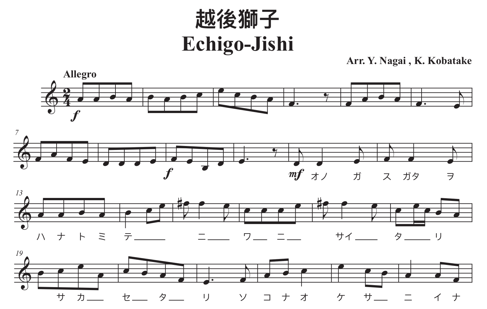 <br/><small>(Quelle: <a href="https://www.musicxml.com/de/music-in-musicxml/example-set/">https://www.musicxml.com/de/music-in-musicxml/example-set/</a>.)</small> --- ### Beispiel Musikedition <a href="img/E13/beethoven0.png">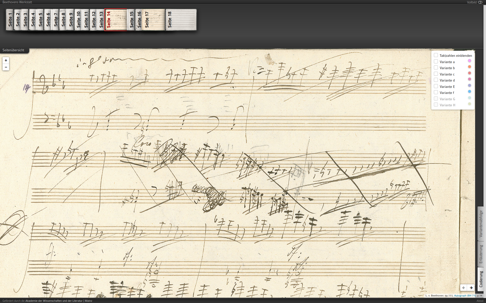</a> <a href="img/E13/beethoven1.png">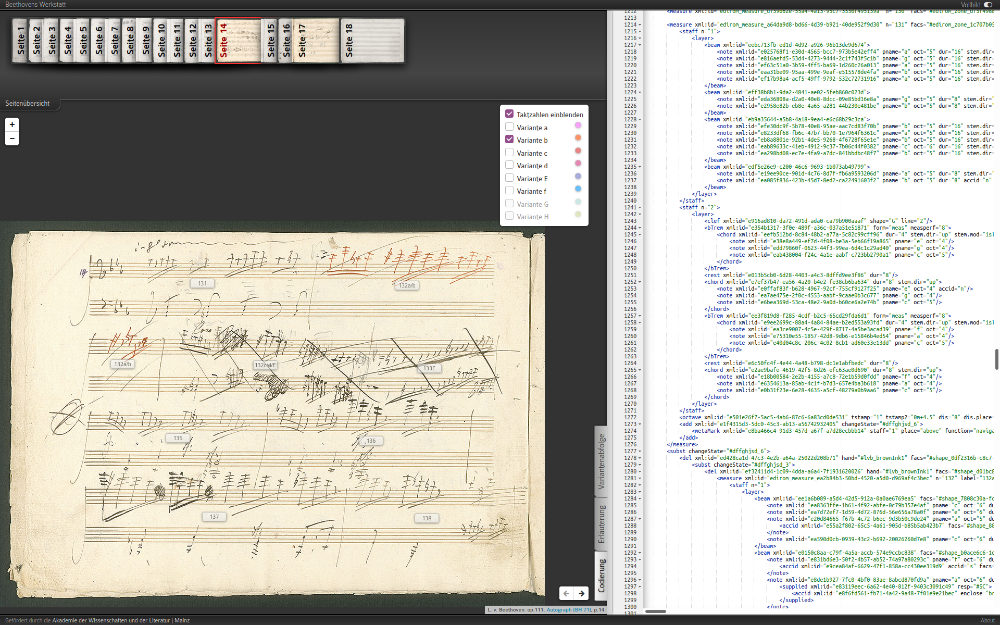</a><br/><a href="img/E13/beethoven2.png">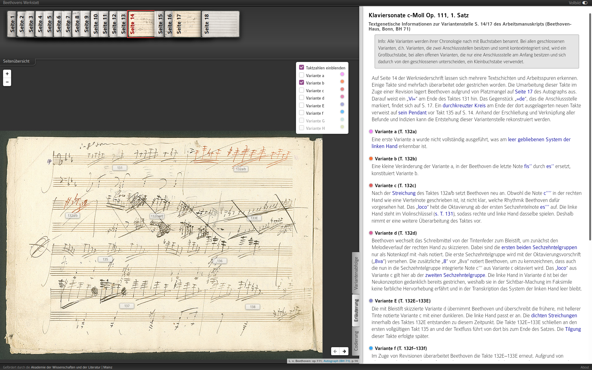</a> <a href="img/E13/beethoven3.png">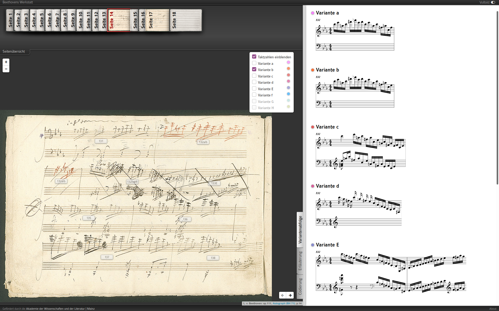</a> <br/><small><a href="https://demo.beethovens-werkstatt.de/index.html">https://demo.beethovens-werkstatt.de/index.html</a></small> --- ### Beispiel Audiodaten (physikalisch) <a href="img/E13/mueller_audiodaten1.png">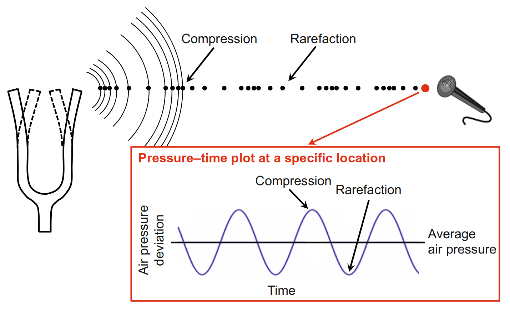</a> <a href="img/E13/mueller_audiodaten2.png">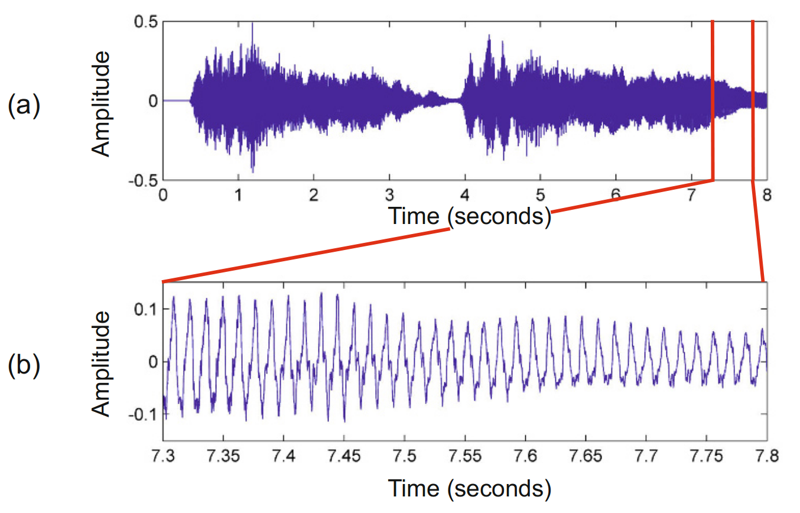</a> <br/><small><br/>Links: Prinzip; rechts: authentische Aufnahme. <br/><br/>(Quelle: Müller, Advances in Music Information Retrieval, 2010.)</small> --- ### Fokus * XML-basierte Auszeichungssprachen für Notentexte * Zwei Sprachen: MusicXML und MEI * Vergleich mit MIDI einerseits, TEI andererseits -- ## (1) MusicXML --- ### MusicXML: Einstieg * Selbstbeschreibung: "MusicXML is a standard open format for exchanging digital sheet music. It is designed for sharing sheet music files between applications [e.g. notation programs, sequencers and other performance programs, music education programs, and music databases] and for archiving sheet music files for use in the future. As of this publication date it is supported by over 250 applications." (https://www.w3.org/2021/06/musicxml40/) --- ### Struktur * Prolog * Header: parts * Part * measure(s) * attributes * note(s) --- ### Hello World (komplett) <a href="img/E13/musicxml-wikipedia.png">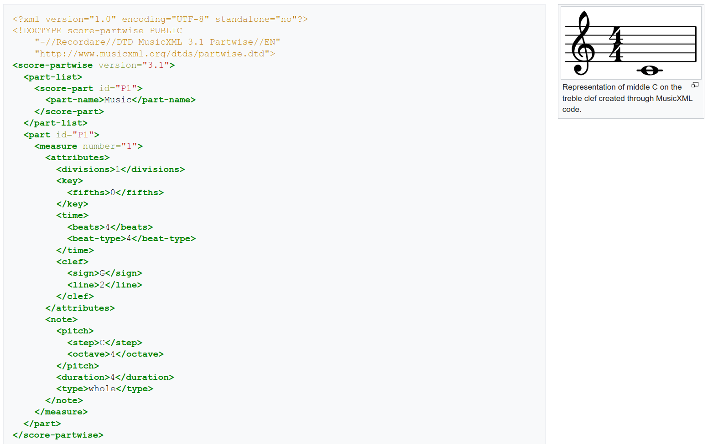</a> <br/><small>(Quelle: https://www.w3.org/2021/06/musicxml40/tutorial/hello-world/)</small> --- ### Prolog ``` <?xml version="1.0" encoding="UTF-8" standalone="no"?> <`!DOCTYPE score-partwise PUBLIC "-//Recordare//DTD MusicXML 4.0 Partwise//EN" "http://www.musicxml.org/dtds/partwise.dtd"> ``` --- ### Header: Parts ``` <score-partwise version="4.0"> <work> <work-number>1</work-number> <work-title>Hello World</work-title> </work> <part-list> <score-part id="P1"> <part-name>Music</part-name> </score-part> </part-list> [...] </score-partwise> ``` * Mehr zum Header: https://www.w3.org/2021/06/musicxml40/tutorial/structure-of-musicxml-files/ --- ### Part: measure(s): attribute ``` <part id="P1"> <measure number="1"> <attributes> <divisions>1</divisions> <key> <fifths>0</fifths> </key> <time> <beats>4</beats> <beat-type>4</beat-type> </time> <clef> <sign>G</sign> <line>2</line> </clef> </attributes> [...] </measure> </part> ``` * Mehr: https://www.w3.org/2021/06/musicxml40/tutorial/structure-of-musicxml-files/ --- ### Note(s) ``` <part id="P1"> <measure number="1"> [...] <note> <pitch> <step>C</step> <octave>4</octave> </pitch> <duration>4</duration> <type>whole</type> </note> </measure> </part> ``` * Mehr: https://www.w3.org/2021/06/musicxml40/tutorial/structure-of-musicxml-files/ --- ### MusicXML: Merkmale * Zwei Perspektiven: 'parts mit measures' oder 'measures mit parts' * Ist sehr auf die Kompatibilität mit Tools und Anwendungen bedacht * Möchte mit MIDI ("sound") kompatibel sein, bietet aber mehr Informationen ("visual": Notentext) * Relevante Tools: bspw. Sibelius, Finale, MuseScore --- ### Beispiel: Après un rêve <a href="img/E13/musicxml-reve.png">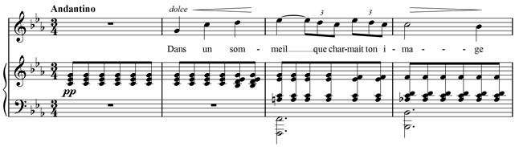</a> * Vollständige Transkription: https://www.w3.org/2021/06/musicxml40/musicxml-reference/examples/tutorial-apres-un-reve/ -- ## (2) Music Encoding Initiative (MEI) --- ### MEI * Wie MusicXML: Fokus auf der symbolischen Repräsentation des Notentextes * Analog zur TEI organisiert: Organisation, Community, Auszeichnungssprache, ODD * Manches von TEI übernommen: u.a. Header-Elemente; Makrostruktur; textkritische Elemente * Kann mehr als MusicXML: * detailliertere Metadaten * Link zu Faksimiles * textkritische Elemente --- ### MEI-Beispiel: Metadaten 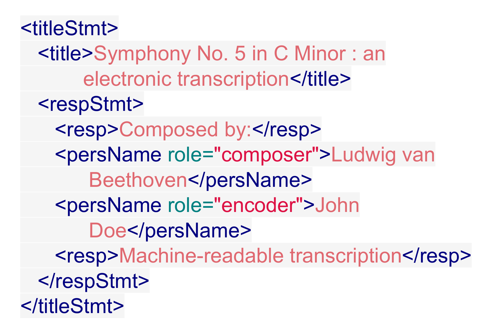 <br/> * Ausschnitt: `meiHead/fileDesc/titleStmt` * aus TEI bekannte Elemente und Struktur * (Quelle: Di Bacco and Ried 2020) --- ### MEI-Beispiel: Rolle der Attribute 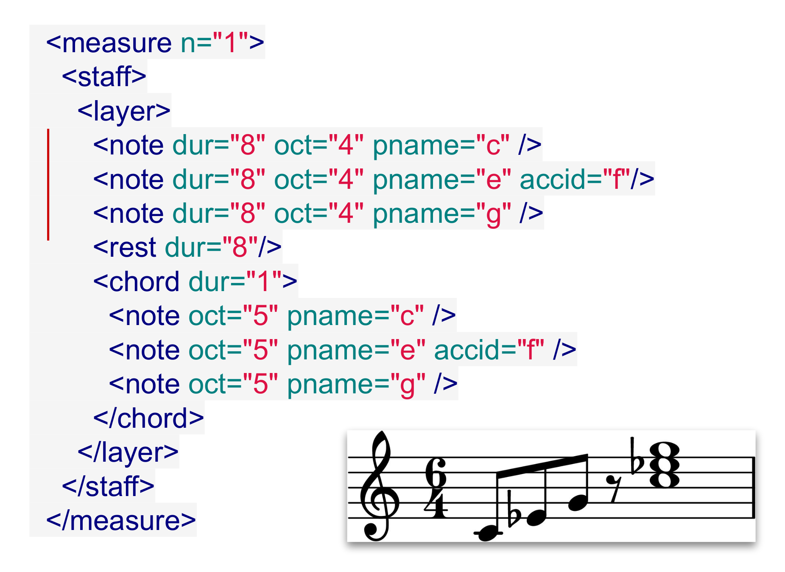 <br/> * Prinzip: Alle Noteninformation in Attributen (!= MusicXML) * `measure/staff(/layer)(/chord)/note` * `layer` = Stimme, `chord` = Akkord * (Quelle: Di Bacco and Ried 2020) --- ### MEI-Beispiel: Variante 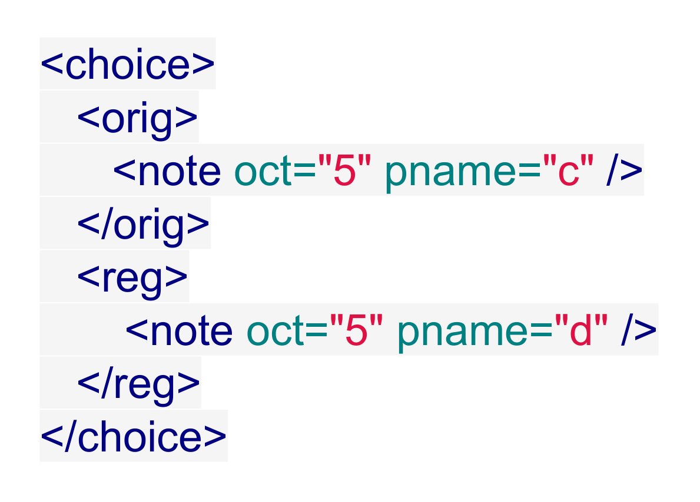 <br/> * aus TEI bekannt: `/choice/orig` und `/choice/reg` * (Quelle: Di Bacco and Ried 2020) --- ### MEI-Beispiel: Textkritik 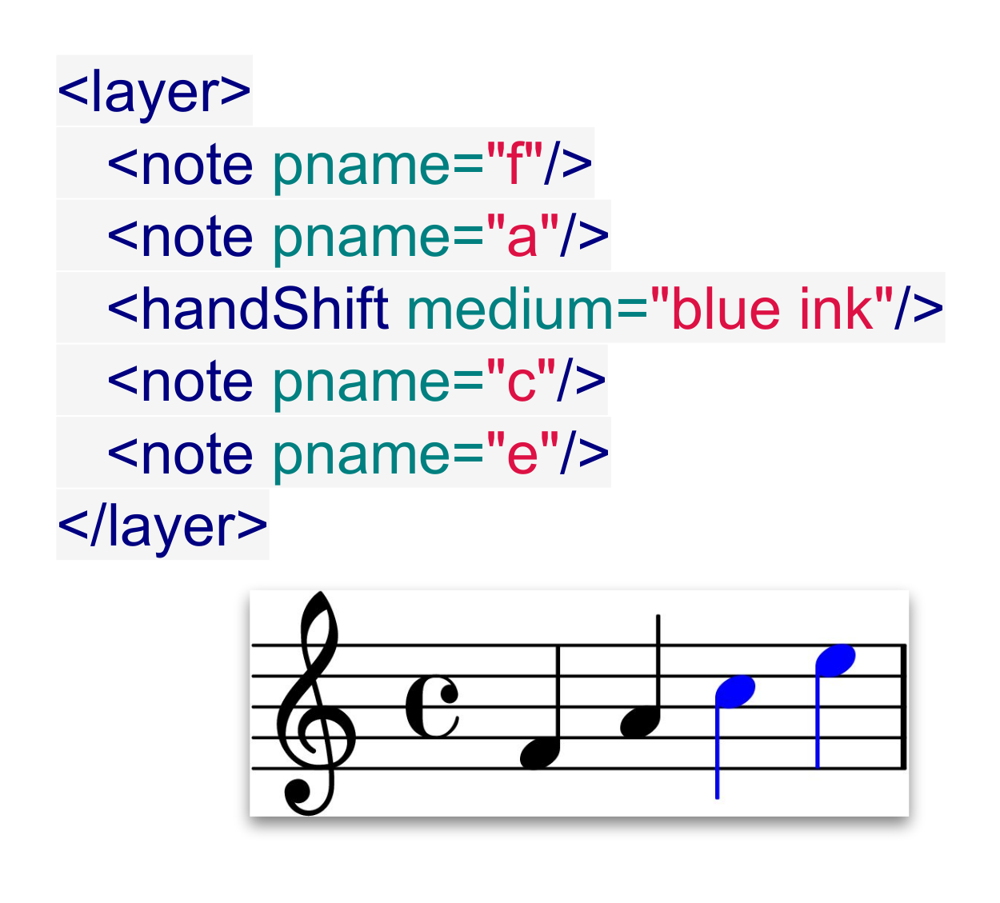 <br/> * `handShift`: neue Hand im Manuskript, hier blau * (Quelle: Di Bacco and Ried 2020) --- ### Tools für MEI * Edirom Editor (o) * MuseScore (o) * Sibelius (c) kann mit Plugin MEI exportieren * Verovio (o): * transformiert MusicXML zu MEI * rendert MEI als Notentext in SVG -- ## Abschluss --- ### Warum gibt es MusicXML und MEI? * Unterschiedliche Ziele und Communities * MusicXML: Industriestandard für Notentext-Verlage/Tools * MEI: Forschungsnaher Standard für wiss. Editionen * MEI kann alles, was MusicXML kann, und einiges mehr * Detaillierter Header * Links zu Faksimiles * Textkritische Elemente * Common Western Notation + Neumen- und Mensural-Notation --- ### Wie ist das Verhältnis von TEI zu MEI? * MEI und TEI sind sich in vielerlei Hinsicht ähnlich * MEI übernimmt eine Menge Elemente von TEI * MEI und TEI können (theoretisch) in einem XML-Dokument gemischt werden (via Namespaces) * Das Element `notatedMusic` in TEI erlaubt die Verlinkung u.a. auf eine MEI-Repräsentation --- ### MIDI < MusicXML < MEI | TEI 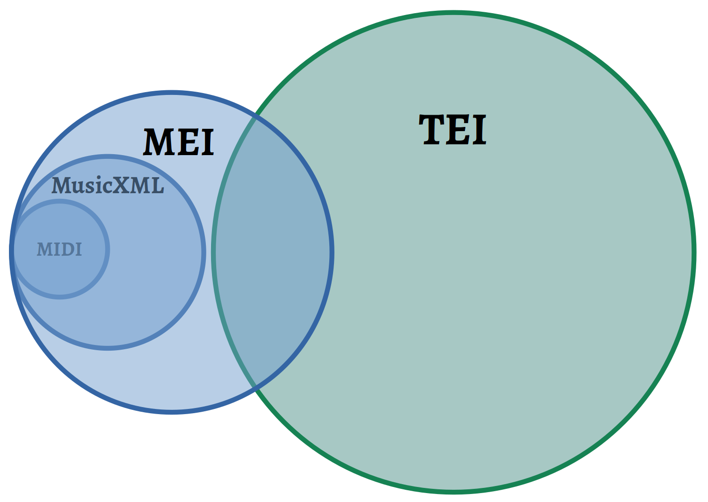</a> --- ### Lektürehinweise Grundlagen * Müller, Meinard, ‘Music Representations’, in: _Advances in Music Information Retrieval._ Berlin: Springer, 2010, 1–37. DOI: <https://doi.org/10.1007/978-3-642-11674-2>. Dokumentationen / Guidelines * Music Encoding Initiative Guidelines, v. 4.0.1, 2020: https://music-encoding.org/ * MusicXML, v4.0, 2021: https://www.w3.org/2021/06/musicxml40/ Quelle der MEI-Beispiele * Giuliano Di Bacco and Dennis Ried: "A very brief introduction to MEI", e-editiones, 2020. URL: https://e-editiones.org/wp-content/uploads/2020/07/MEI_4_GDB_DR.pdf --- ### Danke! <br/><br/> <br/><br/> <br/><br/> <hr/> <small> <br/>Lizenz: <a href="https://creativecommons.org/licenses/by/4.0/">Creative Commons Attribution (CC BY)</a>, 2022. </small> <hr/>